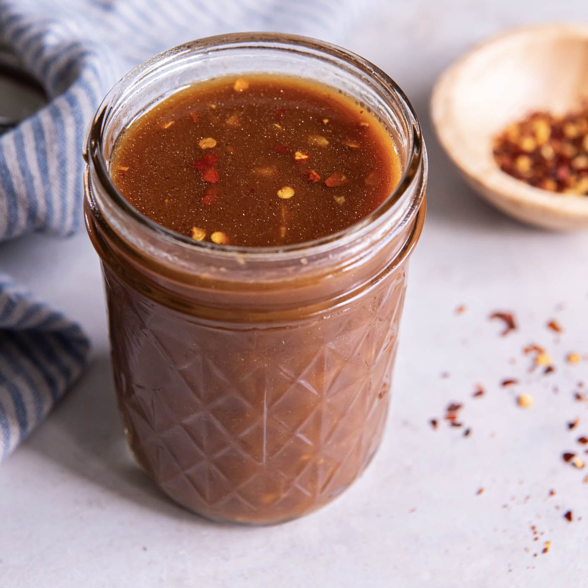

Stir Fry Sauce

Homemade Stir Fry Sauce
Ingredients:
- 1/2 C veggie broth
- 1/3 C soy sauce or amino acids
- 2 T honey
- 2 t sesame oil
- 2 T Fresh grated ginger
- 1 T Cornstarch or arrow root
- red pepper flakes (to taste)
- sweet chili oil (to taste)
Instructions
- combine all ingredients in a mason or other jar with a sealing lid
- shake until combined
- refrigerate until ready to use
- keeps well in the refrigerator for 1 to 2 weeks